Senior Software Engineer, 10+ years in HL/HA enterprise.
Technical Skills
- Frontend: Vue.js v2 and v3 (since 2016), Vuex, Vue Router, TypeScript, SCSS, Less, TipTap, ProseMirror, D3.js, Chart.js, Vuetify, Quasar
- Backend: Node.js (since 2017), PostgreSQL, Elasticsearch, Redis, Kafka, Express.js
- Desktop: Electron
- Infrastructure & Delivery: Vite, Rollup, Webpack, Docker, GitLab CI/CD, GitHub Actions
- Testing: Jest, Cypress (unit, component, E2E);
- Other: Metadata-driven systems, Micro-frontends, NPM package publishing, Legacy modernization, AI tools and LLMs integration, TypeScript migrations;
Professional Experience
Senior Software Engineer (progressed from Junior to Senior roles)
Russian Railways (RZD), Nov 2011 – Apr 2026
Frontend


Built 30+ frontend apps only with modern stack:
- Vue.js v2 and v3, Vuex, Vue Router;
- Typescript;
- D3.js, Chart.js;
- Vuetify, Quasar;
- Scss, Less;
High-Load Ticket Platform Migration
Scale: 20+ million visits per month, ~150K paid tickets per day.
Critical frontend migration from custom jQuery-based framework to Vue.js
- Impact: one SPA instead of multiple pages. ~3x less traffic and server load, improved performance, stability, UX, maintainability, shipment speed, and a modern tech stack for the future
-
Complexity handled:
- Business logic implemented in frontend via JS and metadata-driven server templates;
- Thousands of stations across 11 timezones; intercity, international, and commuter trains and buses;
- Tens of extra services; 3 languages support;
- Hundreds of scenarios;
Russian Railways Admin Dashboard Frontend App
Modern replacement for legacy admin dashboard
- Before: JSP-based IBM WebSphere stateful app (built by Java developers);
- After: Modern async Vue.js application;
- Architecture: Dynamic component rendering based on declarative metadata;
- Result: Significantly improved performance and developer experience
- Adoption: 1000+ users;
- Complex build pipeline;
Screenshots
News admin dashboard page (list with filter)
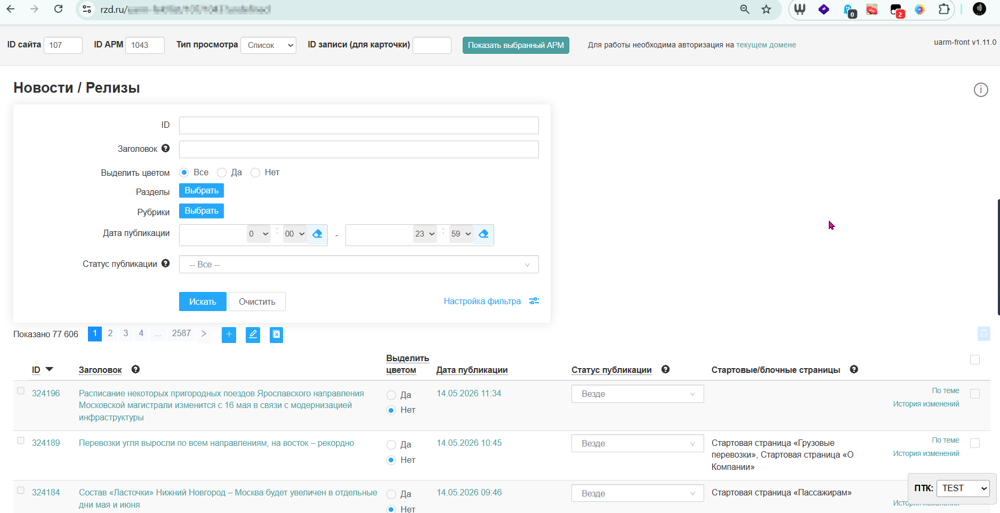
News admin dashboard page (record card)
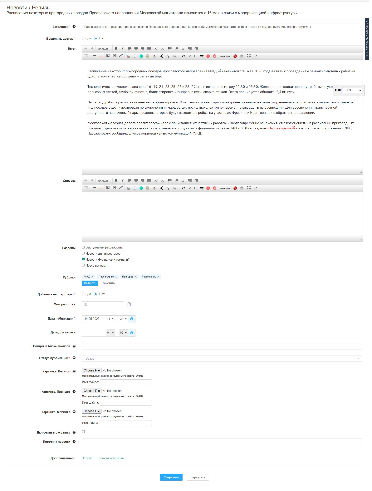
Nav admin dashboard page (list with filter)
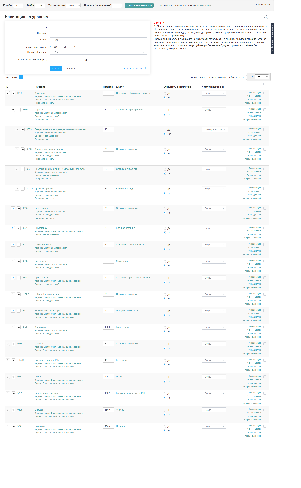
Nav admin dashboard page (record card)
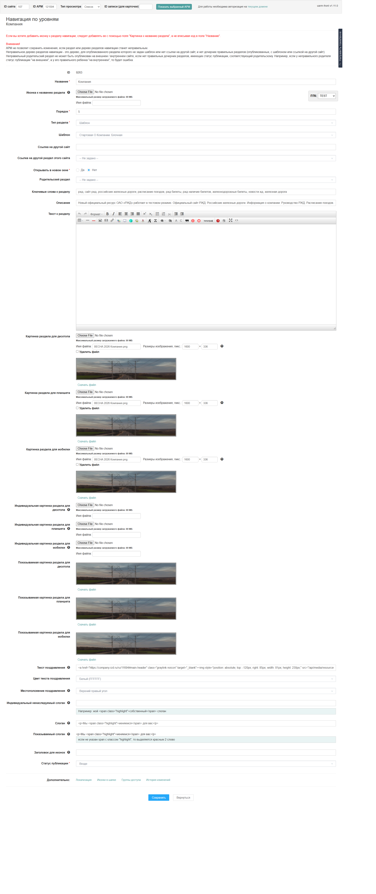
Advanced Kanban App
Enterprise-grade project management frontend
Adoption & Scale:
- Adopted company-wide: 70+ users migrated from Jira;
- Deployed at Russian University of Transport: 200+ users;
Features:
- Drag-and-drop Kanban boards;
- Custom workflow configurations;
- Custom issue fields;
- Issue linking and file attachments;
- Custom WYSIWYG JSON editor (built on TipTap/ProseMirror);
Screenshots
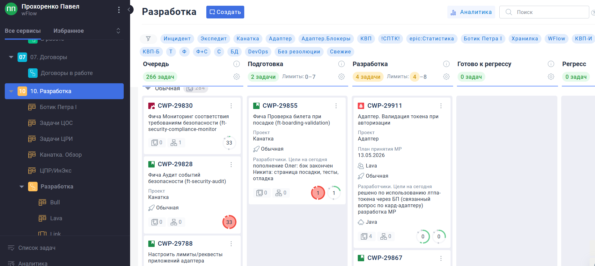
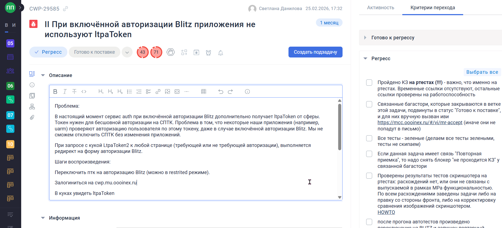
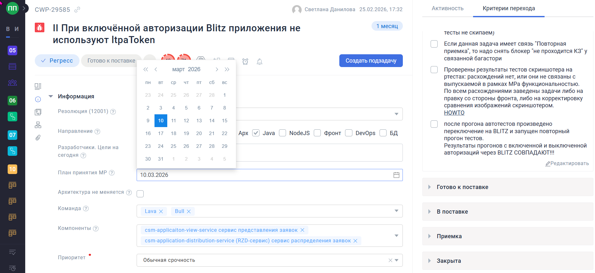
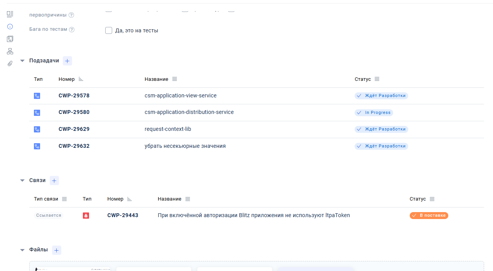
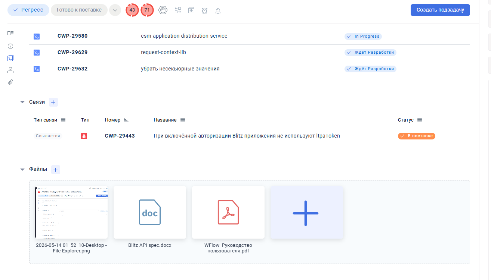
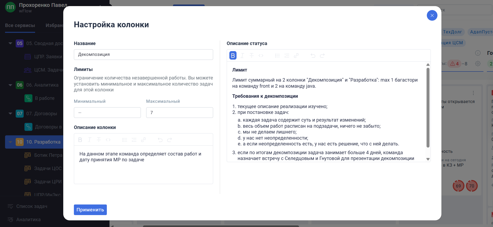
Backend


Have strong experience in backend development and infrastructure management.
Developed 7+ Node.js services with:
- Elasticsearch (indexing and search);
- Apache Kafka;
- PostgreSQL;
- Redis;
- Express.js / Axios;
- "Retry/backoff" strategies;
- JWT and LTPA authentications;
- Logging;
- DOCx and XLSx generation;
- Integrations with various third-party APIs: JSON and XML;
- All components are dockerized
Desktop
MetaWizard Electron App

Complex internal desktop application (Windows/Mac/Linux).
- Designed and developed in 2017;
- Maintained for 9 years then, while keeping up with the latest Electron and Node versions since 1.x and v.0.x respectively
Key Features:
- Metadata editors and lists;
- Database connectivity (Oracle, PostgreSQL);
- SSH/SFTP operations;
- Complex file operations;
- Multi-repository structure with integrated admin dashboard app;
Screenshots
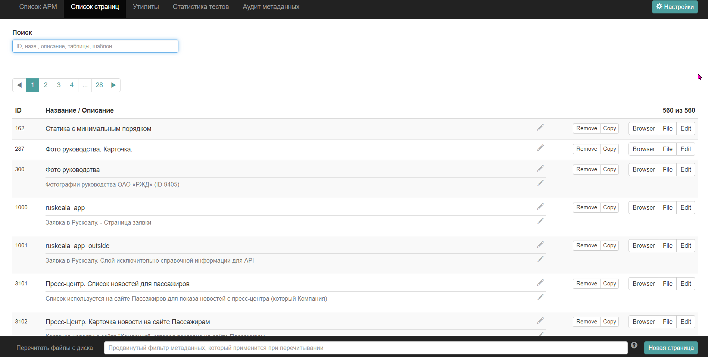
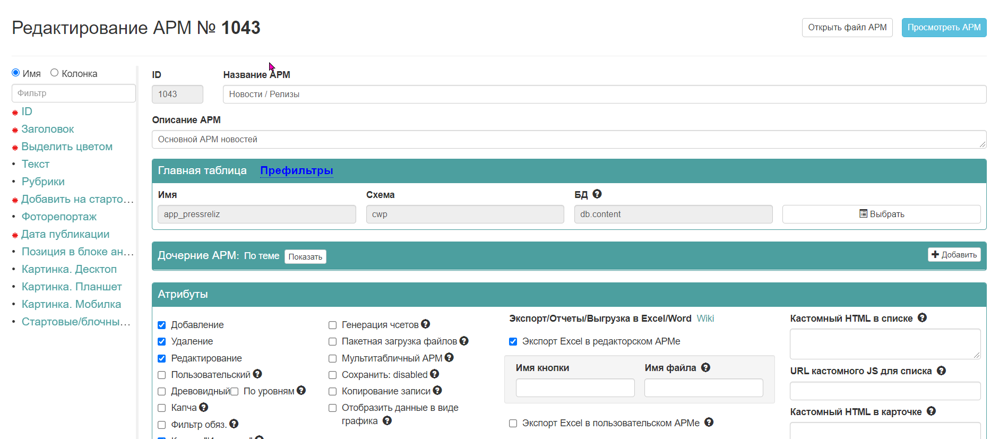
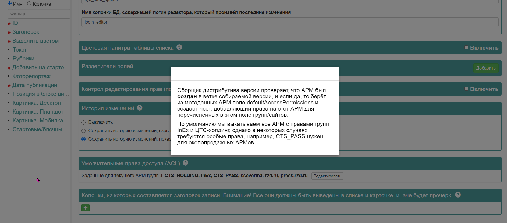
Infrastructure


Developed and maintained complex full-cycle frontend and backend pipelines:
- Build: Vite, Rollup, Webpack, Babel, Eslint, Prettier, Husky, Lint-Staged etc
- Delivery: Docker, GitLab CI/CD, GitHub Actions
Testing


Implemented testing for multiple projects (frontend, backend, desktop):
- Unit, component and E2E
- Jest and Cypress
NPM Packages

- Published 10+ custom packages to the company's private registry
- Frontend and backend, used across multiple company projects
- Provided various build pipelines and CI/CD
Architecture
Designed various solutions on multi-domain basis: backend (app layer + DB layer) and frontend.
Metadata Migration
Declarative system for admin forms and user-facing pages
The metadata system defines two formats for:
- 1000+ Admin Forms: Database-driven CRUD interfaces;
- 500+ User-Facing Pages: Data-fetching layer and component composition;
Evolution:
- Before: Two legacy XML formats with numerous workarounds and custom solutions
- After: Two elegant, maintainable JSON structures with reduced overhead
-
Developed:
- Conversion scripts for both formats;
- Format editors for both formats in Electron App;
- Admin dashboard app;
Metadata formats explanation
What is metadata for Admin Forms
These metadata files are declarative JSON descriptors that define the full lifecycle of an admin form - from the underlying database table(-s) to the UI behavior in the browser.
This eliminates repetitive CRUD boilerplate while maintaining consistency across 1000+ forms.
Each descriptor maps database columns (or cross-table relations) to field definitions specifying behavior across three contexts:
-
List view
- Filtering
- List itself (display, sorting, editing records on-the-fly)
- Form view (create, edit of one record)
Each form field can have different control types in all three contexts, each with its own parameters like validation or defaults or custom template. Some control type examples:
- Input (text, integer, float, email etc) or Textarea
- Dropdown (incl. async search), Popup Picker, both can be used for multi-record selection
- Date with or without time, in Filter context can be used as range
- Map or address picker (geocoder)
- Charts editor
- ...and some more
What is metadata for User-Facing Pages
These page metadata files define the complete HTML page or data-fetching layer (JSON-driven), eliminating custom backend code for each page (total: 500+ pages).
Components are granular building blocks that:- List exact fields to select
- Designate primary keys
- Define relations (one-to-one, one-to-many)
- Handle pagination and filtering
TypeScript Coverage

Led TypeScript migrations for multiple projects, improving code quality and maintainability, reducing runtime errors and enhancing DX.
AI Tools


Using various LLMs with various purposes and approaches.
Maintaining balance between code control and development performance.
When applicable - practicing agentic workflows and Spec-Driven Development (Openspec).
For other purposes - sure: suggestions, configuration, documentation, debugging, testing, quick prototyping, etc.
Education
Bachelor’s Degree in Geological Engineering
Peoples’ Friendship University of Russia (RUDN University), Moscow, Russia, 2005 – 2009
Language skills
Fluent English, native Russian, beginner German, French and Ukrainian.
Location
Remote-first since 2013, now from Thailand. Very flexible with timezones (up to GMT+1).
Open to hybrid jobs if needed, as well as relocation/on-site.
My Priorities
- Teamwork - Collaborating, constantly learning while sharing knowledge with others as mentoring and leading
- Clear design - Architecture, tasks, code etc.
- Building solutions - Either maintainable apps for years ahead OR quick PoC/MVPs
- Balance - Business purposes (first priority), developer experience, and managing tech debt